Anlage 6 Schallzeichen
Rheinschiffahrtspolizeiverordnung
Vorbemerkung:
Die Schallzeichen, ausgenommen die Glockenschläge und das Dreitonzeichen („drei ohne Unterbrechung aufeinander folgende Töne von verschiedener Höhe“), bestehen in der Abgabe eines Tones oder mehrerer Töne hintereinander mit folgenden Merkmalen:
— kurzer Ton: ein Ton von etwa einer Sekunde Dauer;
— langer Ton: ein Ton von etwa vier Sekunden Dauer.
Die Pause zwischen zwei aufeinanderfolgenden Tönen beträgt etwa eine Sekunde. Jedoch besteht das Zeichen „Folge von sehr kurzen Tönen“ aus einer Folge von mindestens sechs Tönen je von etwa einer Viertelsekunde Dauer, wobei die Pause zwischen den Tönen ebenso lang ist. Eine Gruppe von Glockenschlägen muß etwa vier Sekunden dauern. Sie kann durch Schläge von Metall auf Metall gleicher Dauer ersetzt werden.
A. Allgemeine Zeichen | |||
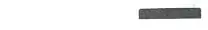 | 1 langer Ton | „Achtung“ | |
1 kurzer Ton | „Ich richte meinen Kurs nach Steuerbord“ | ||
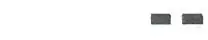 | 2 kurze Töne | „Ich richte meinen Kurs nach Backbord“ | |
3 kurze Töne | „Meine Maschine geht rückwärts“ | ||
4 kurze Töne | „Ich bin manövrierunfähig“ | ||
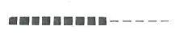 | Folge sehr kurzer Töne | „Gefahr eines Zusammenstoßes“ | |
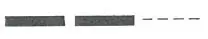 | Wiederholte lange Töne | ||
oder | „Notsignal“ | § 4.04 Nr. 1 | |
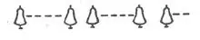 | Gruppen von Glockenschlägen | ||
B. Begegnungszeichen | |||
Vorbeifahrt an Backbord verlangt | |||
Normalfall: | |||
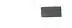 | 1 kurzer Ton des Bergfahrers | „Ich will an Backbord vorbeifahren“ | § 6.04 Nr. 4 |
1 kurzer Ton des Talfahrers | „Einverstanden, fahren Sie an Backbord vorbei“ | § 6.04 Nr. 5 | |
Abweichung: | |||
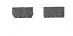 | 2 kurze Töne des Talfahrers | „Nicht einverstanden, fahren Sie an Steuerbord vorbei“ | § 6.05 Nr. 2 |
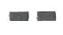 | 2 kurze Töne des Bergfahrers | „Einverstanden, ich werde an Steuerbord vorbeifahren“ | § 6.05 Nr. 3 |
Vorbeifahrt an Steuerbord verlangt | |||
Normalfall: | |||
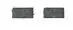 | 2 kurze Töne des Bergfahrers | „Ich will an Steuerbord vorbeifahren” | § 6.04 Nr. 4 |
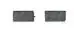 | 2 kurze Töne des Talfahrers | „Einverstanden, fahren Sie an Steuerbord vorbei“ | § 6.04 Nr. 5 |
Abweichung: | |||
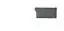 | 1 kurzer Ton des Talfahrers | „Nicht einverstanden, fahren Sie an Backbord vorbei“ | § 6.05 Nr. 2 |
1 kurzer Ton des Bergfahrers | „Einverstanden, ich werde an Backbord vorbeifahren“ | § 6.05 Nr. 3 | |
C. Überholzeichen | |||
Überholen an Backbord des Vorausfahrenden verlangt | |||
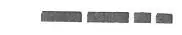 | 2 lange Töne 2 kurze Töne des Überholenden | „Ich will auf Ihrer Backbordseite überholen“ | § 6.10 Nr. 2 |
Normalfall: | Kein Zeichen des Vorausfahrenden | „Einverstanden, Sie können auf meiner Backbordseite überholen“ | § 6.10 Nr. 3 |
Abweichung: | |||
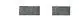 | 2 kurze Töne des Vorausfahrenden | „Nicht einverstanden, überholen Sie auf meiner Steuerbordseite“ | § 6.10 Nr. 4 |
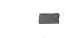 | 1 kurzer Ton des Überholenden | „Einverstanden, ich werde auf Ihrer Steuerbordseite überholen“ | § 6.10 Nr. 4 |
Überholen an Steuerbord des Vorausfahrenden verlangt | |||
2 lange Töne, 1 kurzer Ton des Überholenden | „Ich will auf Ihrer Steuerbordseite überholen“ | § 6.10 Nr. 2 | |
Normalfall: | Kein Schallzeichen des Vorausfahrenden | „Einverstanden, Sie können auf meiner Steuerbordseite überholen” | § 6.10 Nr. 3 |
Abweichung: | |||
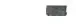 | 1 kurzer Ton des Vorausfahrenden | „Nicht einverstanden, überholen Sie auf meiner Backbordseite“ | § 6.10 Nr. 4 |
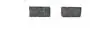 | 2 kurze Töne des Überholenden | „Einverstanden, ich werde auf Ihrer Backbordseite überholen“ | § 6. 10 Nr. 4 |
Unmöglichkeit des Überholens | |||
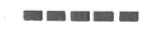 | 5 kurze Töne des Vorausfahrenden | „Man kann mich nicht überholen“ | § 6.10 Nr. 5 |
D. Wendezeichen | |||
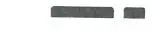 | 1 langer Ton, 1 kurzer Ton | „Ich wende über Steuerbord“ | § 6.13 Nr. 2, § 6.16 Nr. 2 |
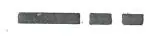 | 1 langer Ton, 2 kurze Töne | „Ich wende über Backbord“ | § 6.13 Nr. 2, § 6.16 Nr. 2 |
E. Zeichen bei der Einfahrt in und der Ausfahrt aus Häfen und Nebenwasserstraßen | |||
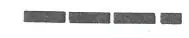 | 3 lange Töne, 1 kurzer Ton | „Ich will meinen Kurs nach Steuerbord richten“ | § 6.16 Nr. 2 |
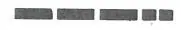 | 3 lange Töne, 2 kurze Töne | „Ich will meinen Kurs nach Backbord richten“ | § 6.16 Nr. 2 |
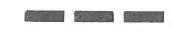 | 3 lange Töne | „Ich will überqueren“ | § 6.16 Nr. 2 |
F. (ohne Inhalt) | |||
G. Zeichen bei unsichtigem Wetter | |||
a) Einzeln fahrende Fahrzeuge und Verbände, die kein Radar benutzen | |||
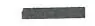 | 1 langer Ton, längstens jede Minute wiederholt | § 6.33 Buchstabe b | |
b) Fahrzeuge in der Radarfahrt, wenn kein Sprechfunkkontakt zustande kommt | |||
1 langer Ton, wiederholt | § 6.32 Nr. 2 Buchstabe d | ||
c) Stillliegende Fahrzeuge | |||
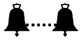 | 1 Gruppe von Glockenschlägen, längstens jede Minute wiederholt | § 6.31 Nr. 2 |